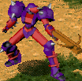
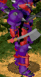
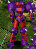
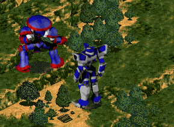
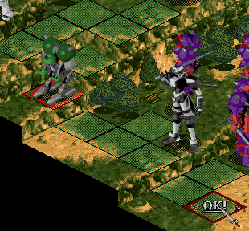

| 概要 | 情報 | Weapon一覧 |
| Magic一覧 | Device一覧 | Item一覧 |
| 攻略チャート | Warlocks 攻略へ |
| Stage6 逃げる! | |||
| 名前 | Lv. | 武器 | 人数 |
| 傭兵 RHINO  |
10 | 弓 | 4 |
| 傭兵 RHINO  |
10 | 斧2本 | 2 |
| 傭兵 RHINO  |
10 | 剣 | 1 |
| 傭兵 RHINO |
18 | 斧2本 | 2 |
| 傭兵 RHINO |
18 | 剣 | 2 |
| このステージでは敵が無限に出続けます。 むやみに敵のレベルを上げないようにしましょう。 このステージのクリア条件は、攻撃のできない緑色の変なWarlockを一番下まで移動させることです。 このを開始してから、このWarlockを移動させずにテリー達だけ進軍させましょう。かなり近づかないと敵が攻撃してこないので、経験値を稼げます。 エミリー、サミュエルは通常攻撃で、ムーア、テリーも通常攻撃でレベルが上げられます。チャーリーはどうしましょうか・・・。 購入しておくべきアイテムは、氷結のLv.2かLv.3と中級レベルの回復魔法です。それと、レベルアップに便利な「増幅器」です。「載天」は使い回しで、装備していないキャラがいても問題ありません。 ある程度味方のレベルが上がったら、ふもとへ通じるマップ右(?)の2カ所と、マップ下1カ所をWarlockで封鎖しましょう。 封鎖した状態で、緑色の変なWarlockが1回の移動でふもとの一番下まで移動できるように近づけて、あとは 何とかしてください。

(こんな風に通路をふさいで)  (この位置から、アイコンのある場所まで移動させる) |
|||
| 概要 | 情報 | Weapon一覧 |
| Magic一覧 | Device一覧 | Item一覧 |
| 攻略チャート | Warlocks 攻略へ |